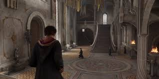
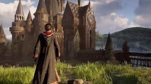

<!DOCTYPE>
<html >
<head>
    
 <title>BestGamesHub</title>
 <link rel="stylesheet"  href="../style/style.css">
</head>
<body>

<header>
   <center> <h1>Hogwarts Legacy  </h1> </center>
</header>
<blockquote><blockquote><blockquote>
<palign="jistify"> 
<p>Hogwarts Legacy es un videojuego de rol de accion (RPG) en mundo abierto ambientado en el mundo magico de Harry Potter. Fue desarrollado por Portkey Games y lanzado en febrero de 2023 para varias plataformas, incluyendo PlayStation 5, PlayStation 4, Xbox Series X/S, Xbox One, y PC, y en 2024 para Nintendo Switch. A diferencia de los juegos anteriores de la saga Harry Potter, Hogwarts Legacy no sigue la historia de Harry Potter, sino que se sitia en el siglo XIX, mucho antes de los eventos de los libros y peliculas.</p>

<h3> ¿De que trata Hogwarts Legacy?</h3>
<palign="jistify"> 
<p> En Hogwarts Legacy, los jugadores toman el control de un joven mago o bruja que es admitido en la famosa Escuela de Magia y Hechiceria de Hogwarts en el siglo XIX. Lo que hace especial a tu personaje es que posee la habilidad rara de manipular la magia antigua, una forma de magia poderosa que este perdida para la mayoria de los magos. A medida que avanzas en la historia, te enfrentas a misterios relacionados con esta antigua magia, ademas de explorar los problemas que amenazan al mundo magico, incluyendo una amenaza por parte de oscuros personajes y fuerzas.</p>
<p>El juego ofrece una experiencia inmersiva, permitiendote asistir a clases en Hogwarts, aprender hechizos, descubrir secretos ocultos en el castillo y en sus alrededores, y tomar decisiones que afectaron el desarrollo de la historia. Ademas de Hogwarts, puedes explorar otras ubicaciones del universo de Harry Potter, como Hogsmeade, El Bosque Prohibido, y las Montañas de Escocia.</p>




</body>
</html>